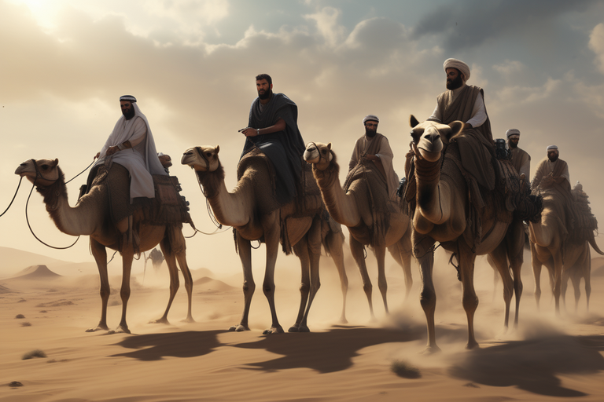
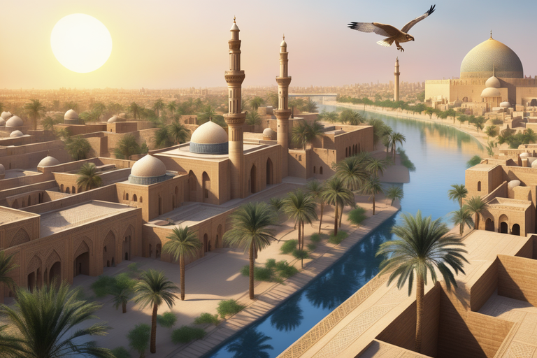

PERADABAN ISLAM
Partai Nazi yang sangat fenomenal pada masa perang dunia kedua.
Artikel | Arief Rahman Hakim Batubara | 20 Des 2023
Artikel | Arief Rahman Hakim Batubara | 20 Des 2023

Foto didesain oleh uca nazira dengan photoshop dan menggunakan
teknologi AI (https://playgroundai.com/)
Sejarah Islam meliputi perkembangan politik, sosial, ekonomi,
militer, dan budaya peradaban Islam. Jumhur sejarawan mencatat
bahwa Islam berasal dari kota Makkah dan Madinah pada awal Abad
ke-7 Masehi.Penyebaran Islam melalui Adat Islam ajaran Islam yang
ditanamkan melalui perangkat budaya yang sudah ada berkembang
sebelumnya, mau tak mau, menyisakan warisan agama lama dan
kepercayaan yang ada, yang tumbuh subur di masyarakat pada waktu
itu, untuk melestarikan kemudian dibersihkan dari anasir syirik,
pembersihan anasir syirik ini merupakan satu upaya untuk
meneguhkan konsep monoteisme (tauhid) dalam ajaran Islam.
Jazirah Arab sebelum kedatangan Islam merupakan sebuah kawasan yang sangat mundur. Kebanyakkan orang Arab adalah penyembah berhala dan yang lain merupakan pengikut agama Kristen dan Yahudi. Mekah ketika itu merupakan tempat suci bagi bangsa Arab. karena di tempat tersebut terdapat berhala-berhala agama mereka dan juga terdapat Sumur Zamzam dan yang paling penting adalah Ka'bah. Muhammad dilahirkan di Mekah pada Tahun Gajah yaitu pada tanggal 12 Rabi'ul Awal atau pada tanggal 21 April (570 atau 571 Masehi). Muhammad merupakan seorang anak yatim sesudah ayahnya Abdullah bin Abdul Muttalib meninggal ketika ia masih dalam kandungan dan ibunya Aminah binti Wahab meninggal dunia ketika ia berusia 6 tahun. Kemudian ia diasuh oleh kakeknya Abdul Muthalib. Setelah kakeknya meninggal ia diasuh juga oleh pamannya yaitu Abu Talib. Muhammad kemudiannya menikah dengan Siti Khadijah ketika ia berusia 25 tahun. Ia pernah menjadi penggembala kambing.
Muhammad pernah diangkat menjadi hakim. Pada usia 35 tahun, kota Mekah dilanda banjir, Ia tidak menyukai suasana kota Mekah yang dipenuhi dengan masyarakat yang memiliki masalah sosial yang tinggi. Selain menyembah berhala, masyarakat Mekah pada waktu itu juga mengubur bayi-bayi perempuan. Muhammad banyak menghabiskan waktunya dengan menyendiri di Gua Hira untuk mencari ketenangan dan memikirkan masalah penduduk Mekah. Ketika Muhammad berusia 40 tahun, ia didatangi oleh Malaikat Jibril. Setelah itu ia mengajarkan ajaran Islam secara diam-diam kepada orang-orang terdekatnya yang dikenal sebagai "as-Sabiqun al-Awwalun (Orang-orang pertama yang memeluk agama Islam)" dan selanjutnya secara terbuka kepada seluruh penduduk Mekah, setelah turun wahyu Al-Qur'an surat Al-Hijr ayat 94. Pada tahun 622, Muhammad dan pengikutnya pindah dari Mekah ke Madinah. Peristiwa ini dinamai Hijrah. Semenjak peristiwa itu dimulailah Kalender Islam atau Kalender Hijriyah. Penduduk Mekah dan Madinah ikut berperang bersama Muhammad dengan hasil yang baik walaupun ada di antaranya kaum Islam yang tewas. Lama kelamaan para muslimin menjadi lebih kuat, dan berhasil menaklukkan Kota Mekah. Setelah Muhammad wafat, seluruh Jazirah Arab di bawah penguasaan Islam.
empat khalifah bergantian memerintah negara Islam: Abu Bakar (632-634), Umar bin Khattab (634-644), Utsman bin Affan (644-656), dan Ali bin Abi Thalib (656-661). Para pemimpin ini digelari para Khalifah "Rasyidin" atau "yang terbimbing" dalam Islam Sunni. Merekalah yang mengawal tahap awal penaklukan Islam, terus hingga ke Persia, Syam, Mesir, dan Afrika Utara. Sepeninggalnya Rasulullah, Abu Bakar, seorang sahabat terdekatnya, terpilih sebagai khalifah (Arab: خليفة , translit. khalīfah, har. 'penerus') pertama. Meskipun dalam kedudukan khalifah tetap ada aura otoritas agama, khalifah sama sekali tidak mengakui kenabian.
Sejumlah kepala suku menolak untuk melanjutkan perjanjian yang mereka buat dengan Rasulullah kepada Abu Bakar, sehingga mereka menahan pembayaran zakat dan beberapa justru mengaku sebagai nabi. Abu Bakar mempertahankan kekuasaannya melalui kampanye militer yang sukses, dikenal dengan sebutan Perang Riddah, yang momentumnya diteruskan ke wilayah Kekaisaran Romawi Timur dan Sasaniyah. Di akhir masa khalifah kedua, Umar, pasukan-pasukan Arab, yang jumlah barisan perangnya semakin membengkak karena tambahan pemberontak yang kalah[18] dan mantan pasukan pembantu kerajaan, mengalahkan Syam dan Mesir, dua provinsi Romawi Timur, sedangkan Sasaniyah kehilangan teritori barat mereka, yang sisanya akan menyusul segera setelahnya.
Umar memperbaiki administrasi imperium yang masih muda ini, memerintahkan peningkatkan saluran irigasi dan ikut serta berperan dalam pembentukan kota-kata seperti Basra. Dekat dengan orang-orang miskin, dia tinggal di sebuah pondok tanah liat sederhana tanpa pintu dan berjalan mengelilingi jalanan setiap malam. Setelah mencari keterangan dengan orang-orang miskin, Umar mendirikan Baitulmal,sebuah institusi kesejahteraan untuk kaum miskin, berkebutuhan, lansia, yatim, janda, dan penyandang disabilitas yang Muslim dan non-Muslim. Baitulmal beroperasi ratusan tahun di bawah Kekhalifahan Rasyidin di abad ke-7 hingga ke periode Umayyah dan juga ke era Abbasiyah.Umar juga mengenalkan pensiun untuk lansia dan tunjangan untuk anak.Ketika dia merasa bahwa seorang gubernur atau komandan menjadi terpikat pada kekayaan atau tidak memenuhi standar administrasi yang dibutuhkan, dia memindahnya dari jabatannya.
Ekspansi sebagian dihentikan antara 638 dan 639 selama tahun-tahun kelaparan di Semenanjung Arab dan wabah berat di Syam, tetapi di akhir masa berkuasanya Umar, Suriah, Mesir, Mesopotamia, dan sebagian besar Persia telah menjadi bagian dari negara Islam. Populasi Yahudi lokal dan Kristen pribumi, yang tinggal sebagai minoritas agama dan dibebani pajak (sementara Muslim membayar "Zakat") untuk membiayai Perang-perang Romawi Timur dan Sasaniyah, sering membantu Muslim mengambil alih tanah mereka dari Bizantium dan Persia, menghasilkan penaklukan-penaklukan yang luar biasa kilat.Seiring ditaklukkannya area-area baru, mereka juga memanfaatkan perdagangan bebas dengan wilayah lain di negara Islam yang tengah tumbuh tersebut, sementara, untuk mendukung kegiatan komersial, pajak diterapkan pada kekayaan alih-alih perdagangan.Orang-orang muslim membayar zakat hartanya untuk diberikan kepada orang-orang miskin.
Sejak Piagam Madinah, naskah yang dibuat oleh Muhammad, orang-orang Yahudi dan Kristen tetap menggunakan hukum dan hakim mereka sendiri.Untuk membantu perluasan negara yang cepat ini, sistem pengumpulan pajak Romawi Timur dan Persia dipertahankan dan rakyat membayar pajak per kapita yang lebih rendah dari masa Romawi Timur dan Persia. Pada 639, Umar menunjuk Muawiyah bin Abi Sufyan sebagai gubernur Syam setelah gubernur sebelumnya meninggal dalam sebuah wabah di antara 25.000 orang lebih.[34][35] Untuk menghentikan usikan Romawi Timur dari arah laut selama Peperangan Romawi Timur-Arab, pada 649 Muawiyah menyusun satu angkatan laut, dengan personilnya adalah para pelaut Kristen monofisit, Koptik, dan Kristen Suriah Yakubiyah serta pasukan Muslim, yang mengalahkan angkatan laut Bizantium pada Pertempuran Foinikos pada 655, membuka Laut Tengah untuk kapal-kapal Muslim.Pasukan-pasukan Muslim awal berkemah jauh dari kota karena Umar khawatir kalau mereka dapat terpikat oleh harta dan kemewahan, menjauhi peribadahan kepada Allah, mengumpulkan kekayaan, dan membentuk dinasti. Dengan tetap berada di kemah-kemah ini jauh dari kota juga memastikan tidak adanya tekanan bagi penduduk lokal sehingga tetap berjalan normal. Beberapa pangkalan kemah ini kemudian tumbuh menjadi kota seperti Basrah dan Kufah di Iraq dan Fustat di Mesir.
Ketika Umar dibunuh pada 644, Utsman bin Affan, sepupu dari kakek dan dua kali menantu Muhammad, menjadi khalifah berikutnya. Karena bahasa Arab ditulis tanpa vokal, beragam penutur dialek bahasa Arab dan bahasa lain membaca Quran dengan variasi fonetis yang dapat mengubah artinya. Ketika Utsman bin Affan menyadari hal ini, dia memerintahkan penyusunan satu salinan standar Quran dan salinan-salinannya dikirim ke beberapa pusat wilayah kekuasaan Islam yang terus meluas.[44] Seiring Utsman menua, Marwan bin al-Hakam, seorang kerabat dari Muawiyah, menyelinap ke dalam kekosongan, menjadi sekretarisnya dan perlahan mengambil kendali. Ketika Utsman dibunuh pada 656, Ali bin Abi Thalib, sepupu dan menantu Muhammad, menaiki posisi khalifah dan memindah ibukota ke Kufah di Iraq. Muawiyah bin Abi Sufyan, gubernur Suriah, dan Marwan bin al-Hakam menuntut penangkapan pelaku pembunuhan. Marwan menggerakkan setiap orang dan membuat konflik, yang membuahkan Perang saudara Islam pertama ("Fitnah pertama"). Ali dibunuh oleh Khawarij pada 661. Enam bulan kemudian pada 661, demi kepentingan perdamaian, putra Ali, Hasan, membuat perjanjian damai dengan Muawiyah. Dalam Perjanjian Hasan–Mu'awiyah, Hasan menyerahkan kekuasaan kepada Muawiyah dengan syarat dia akan berbuat adil kepada rakyat dan tidak membuat dinasti setelah dia meninggal.
Muawiyah pada akhirnya melanggar persyaratan tersebut dan memulai Dinasti Umayyah, beribukota Damaskus.[47] Husain bin Ali, yang saat itu adalah satu-satunya cucu Muhammad yang masih hidup, menolak untuk berbaiat ke keluarga Umayyah. Dia terbunuh di Pertempuran Karbala di tahun yang sama, di peristiwa yang masih diperingati sebagai hari berkabung oleh Syiah, Hari Asyura. Kerusuhan, yang dikenal dengan Fitnah kedua, berlanjut, tetapi kekuasaan Muslim terus meluas di bawah Muawiyah ke Rodos, Kreta, Kabul, Bukhara, dan Samarkand, dan juga meluas ke Afrika Utara. Pada 664, pasukan Arab menaklukkan Kabul,[48] dan pada 665 mendesak sampai ke Magrib.
Kekhalifahan Umayyah Dinasti Umayyah, yang namanya diambil dari Umayyah bin Abdu Syams, kakek buyut khalifah Umayyah pertama, memerintah dari 661 sampai 750. Meskipun keluarga Umayyah berasal dari kota Mekkah, ibu kota negara adalah Damaskus. Setelah meninggalnya Abdurrahman bin Abi Bakar pada 666,[50][51] Muawiyah bin Abu Sufyan memperkukuh kekuasaannya. Muawiyah memindah ibukotanya dari Damaskus ke Madinah, yang membawa perubahan besar terhadap negara Islam. Di waktu kemudian, pemindahan Khalifah dari Damaskus ke Baghdad menandai naik tahtanya satu keluarga baru. Seiring negara tumbuh, pengeluaran negara meningkat.
Selain pengeluaran Baitulmal dan negara kesejahteraan untuk membantu warga fakir, miskin, lansia, yatim, janda, dan difabel meningkat, kekhalifahan meminta orang-orang yang baru masuk Islam (mawali) untuk terus membayar pajak perkapita. Pemerintahan Umayyah, beserta kekayaan dan kemewahannya juga tampak tidak sejalan dengan pesan Islam yang didakwahkan oleh .Semua ini meningkatkan ketidakpuasan. Keturunan paman Muhammad Abbas bin Abdul-Muththalib menyatukan para mawali, bangsa Arab yang miskin, dan beberapa Syiah, yang tidak puas untuk melawan Kekhalifahan dan menggulingkan mereka dengan bantuan Panglima Abu Muslim Al Khurasany, melantik Dinasti Abbasiyyah pada tahun 750, yang memindah ibu kota ke Baghdad.
Satu cabang dari keluarga Umayyah melarikan diri menyeberangi Afrika Utara ke Andalusia dan di sana mereka mendirikan Kekhalifahan Kordoba. Baitulmal dan negara kesejahteraan tadi kemudian diteruskan di bawah Dinasti Abbasiyyah. Dinasti Umayyah sempat mencakup wilayah lebih luas dari 5.000.000 mil persegi (13.000.000 km2) yang membuatnya salah satu dari imperium terbesar yang pernah ada di dunia.[58] Kekhalifahan Abbasiyah atau Bani Abbasiyah adalah Kekhalifahan kedua Islam yang berkuasa di Baghdad dan kemudian berpindah ke Kairo sejak tahun 1261, Kekhalifahan ini berkembang pesat dan menjadikan dunia Islam sebagai pusat pengetahuan dunia, Kekhalifahan ini berkuasa setelah merebutnya dari Bani Umayyah dan menundukkan semua wilayahnya kecuali Andalusia, Bani Abbasiyah me-rujuk kepada keturunan dari paman yang termuda, yaitu Abbas bin Abdul-Muththalib, oleh karena itu mereka juga termasuk ke dalam Bani Hasyim, berkuasa mulai tahun 750 dan memindahkan ibu kota dari Damaskus ke Baghdat, pada zaman Kekhalifahan Abbasiyah atau Bani Abbasiyah, keturunan dari Ahlul Bait Sayyidina Hussein menuju pasai Pulau Perca yang salah satunya yakni Iskandar Zulkarnain Sultan Yang Dipertuan dari Sayyidina Hussein, Sultan Iskandar Zulkarnain beserta anak cucu berangkat dari pulau Perca syiar Islam nasab Iskandar Zulkarnain (IZ) dari Ahlul Bait Sayyidina Hussein bin Ali istri Puteri Syahri Banun keturunan Muhammad salah satu diantaranya ialah Sultan Ratu Mumelar paksi Raja Diraja, Raja Nusirwan, Raja Masyirik dan Magrib, sedangkan nasab IZ dari putri anak baludari pencar dari raja sulaiman alaihi's yaitu raja Bicitram syah, sri sultan Perkasa Alam Johan Berdaulat, sultan Alaudin Mughayat Syah Raja Diraja, Sultan, Raja keindraan itu turun-temurun dari pada pertalian kekeluargaan berdasarkan hubungan darah, baik ke atas, ke bawah, maupun ke samping dan bangsa Sultan Iskandar Zulkarnain, Asal usul bangsa kahulu menyebut Sultan, Raja di Pulau Perca penyebar Islam berasal dari Sultan Yang Dipertuan
Islam di Indonesia Islam telah dikenal di Indonesia pada abad pertama Hijriyah atau 7 Masehi, meskipun dalam frekuensi yang tidak terlalu besar hanya melalui perdagangan dengan para pedagang muslim yang berlayar ke Indonesia untuk singgah untuk beberapa waktu. Pengenalan Islam lebih intensif, khususnya di Semenanjung Melayu dan Nusantara, yang berlangsung beberapa abad kemudian. Agama islam pertama masuk ke Indonesia melalui proses perdagangan, pendidikan dan lain-lain. Tokoh penyebar agama islam adalah walisongo antara lain :
1. Sunan Ampel
2. Sunan Bonang
3. Sunan Muriab
4. Sunan Gunung Jati
5. Sunan Kalijaga
6. Sunan Giri
7. Sunan Kudus
8. Sunan Drajat
9. Sunan Gresik (Maulana Malik Ibrahim)
1. Muhammad SAW
Jazirah Arab sebelum kedatangan Islam merupakan sebuah kawasan yang sangat mundur. Kebanyakkan orang Arab adalah penyembah berhala dan yang lain merupakan pengikut agama Kristen dan Yahudi. Mekah ketika itu merupakan tempat suci bagi bangsa Arab. karena di tempat tersebut terdapat berhala-berhala agama mereka dan juga terdapat Sumur Zamzam dan yang paling penting adalah Ka'bah. Muhammad dilahirkan di Mekah pada Tahun Gajah yaitu pada tanggal 12 Rabi'ul Awal atau pada tanggal 21 April (570 atau 571 Masehi). Muhammad merupakan seorang anak yatim sesudah ayahnya Abdullah bin Abdul Muttalib meninggal ketika ia masih dalam kandungan dan ibunya Aminah binti Wahab meninggal dunia ketika ia berusia 6 tahun. Kemudian ia diasuh oleh kakeknya Abdul Muthalib. Setelah kakeknya meninggal ia diasuh juga oleh pamannya yaitu Abu Talib. Muhammad kemudiannya menikah dengan Siti Khadijah ketika ia berusia 25 tahun. Ia pernah menjadi penggembala kambing.
Muhammad pernah diangkat menjadi hakim. Pada usia 35 tahun, kota Mekah dilanda banjir, Ia tidak menyukai suasana kota Mekah yang dipenuhi dengan masyarakat yang memiliki masalah sosial yang tinggi. Selain menyembah berhala, masyarakat Mekah pada waktu itu juga mengubur bayi-bayi perempuan. Muhammad banyak menghabiskan waktunya dengan menyendiri di Gua Hira untuk mencari ketenangan dan memikirkan masalah penduduk Mekah. Ketika Muhammad berusia 40 tahun, ia didatangi oleh Malaikat Jibril. Setelah itu ia mengajarkan ajaran Islam secara diam-diam kepada orang-orang terdekatnya yang dikenal sebagai "as-Sabiqun al-Awwalun (Orang-orang pertama yang memeluk agama Islam)" dan selanjutnya secara terbuka kepada seluruh penduduk Mekah, setelah turun wahyu Al-Qur'an surat Al-Hijr ayat 94. Pada tahun 622, Muhammad dan pengikutnya pindah dari Mekah ke Madinah. Peristiwa ini dinamai Hijrah. Semenjak peristiwa itu dimulailah Kalender Islam atau Kalender Hijriyah. Penduduk Mekah dan Madinah ikut berperang bersama Muhammad dengan hasil yang baik walaupun ada di antaranya kaum Islam yang tewas. Lama kelamaan para muslimin menjadi lebih kuat, dan berhasil menaklukkan Kota Mekah. Setelah Muhammad wafat, seluruh Jazirah Arab di bawah penguasaan Islam.
2. Kekhalifahan Rasyidin Setelah Rasulullah meninggal

empat khalifah bergantian memerintah negara Islam: Abu Bakar (632-634), Umar bin Khattab (634-644), Utsman bin Affan (644-656), dan Ali bin Abi Thalib (656-661). Para pemimpin ini digelari para Khalifah "Rasyidin" atau "yang terbimbing" dalam Islam Sunni. Merekalah yang mengawal tahap awal penaklukan Islam, terus hingga ke Persia, Syam, Mesir, dan Afrika Utara. Sepeninggalnya Rasulullah, Abu Bakar, seorang sahabat terdekatnya, terpilih sebagai khalifah (Arab: خليفة , translit. khalīfah, har. 'penerus') pertama. Meskipun dalam kedudukan khalifah tetap ada aura otoritas agama, khalifah sama sekali tidak mengakui kenabian.
Sejumlah kepala suku menolak untuk melanjutkan perjanjian yang mereka buat dengan Rasulullah kepada Abu Bakar, sehingga mereka menahan pembayaran zakat dan beberapa justru mengaku sebagai nabi. Abu Bakar mempertahankan kekuasaannya melalui kampanye militer yang sukses, dikenal dengan sebutan Perang Riddah, yang momentumnya diteruskan ke wilayah Kekaisaran Romawi Timur dan Sasaniyah. Di akhir masa khalifah kedua, Umar, pasukan-pasukan Arab, yang jumlah barisan perangnya semakin membengkak karena tambahan pemberontak yang kalah[18] dan mantan pasukan pembantu kerajaan, mengalahkan Syam dan Mesir, dua provinsi Romawi Timur, sedangkan Sasaniyah kehilangan teritori barat mereka, yang sisanya akan menyusul segera setelahnya.
Umar memperbaiki administrasi imperium yang masih muda ini, memerintahkan peningkatkan saluran irigasi dan ikut serta berperan dalam pembentukan kota-kata seperti Basra. Dekat dengan orang-orang miskin, dia tinggal di sebuah pondok tanah liat sederhana tanpa pintu dan berjalan mengelilingi jalanan setiap malam. Setelah mencari keterangan dengan orang-orang miskin, Umar mendirikan Baitulmal,sebuah institusi kesejahteraan untuk kaum miskin, berkebutuhan, lansia, yatim, janda, dan penyandang disabilitas yang Muslim dan non-Muslim. Baitulmal beroperasi ratusan tahun di bawah Kekhalifahan Rasyidin di abad ke-7 hingga ke periode Umayyah dan juga ke era Abbasiyah.Umar juga mengenalkan pensiun untuk lansia dan tunjangan untuk anak.Ketika dia merasa bahwa seorang gubernur atau komandan menjadi terpikat pada kekayaan atau tidak memenuhi standar administrasi yang dibutuhkan, dia memindahnya dari jabatannya.
Ekspansi sebagian dihentikan antara 638 dan 639 selama tahun-tahun kelaparan di Semenanjung Arab dan wabah berat di Syam, tetapi di akhir masa berkuasanya Umar, Suriah, Mesir, Mesopotamia, dan sebagian besar Persia telah menjadi bagian dari negara Islam. Populasi Yahudi lokal dan Kristen pribumi, yang tinggal sebagai minoritas agama dan dibebani pajak (sementara Muslim membayar "Zakat") untuk membiayai Perang-perang Romawi Timur dan Sasaniyah, sering membantu Muslim mengambil alih tanah mereka dari Bizantium dan Persia, menghasilkan penaklukan-penaklukan yang luar biasa kilat.Seiring ditaklukkannya area-area baru, mereka juga memanfaatkan perdagangan bebas dengan wilayah lain di negara Islam yang tengah tumbuh tersebut, sementara, untuk mendukung kegiatan komersial, pajak diterapkan pada kekayaan alih-alih perdagangan.Orang-orang muslim membayar zakat hartanya untuk diberikan kepada orang-orang miskin.
Sejak Piagam Madinah, naskah yang dibuat oleh Muhammad, orang-orang Yahudi dan Kristen tetap menggunakan hukum dan hakim mereka sendiri.Untuk membantu perluasan negara yang cepat ini, sistem pengumpulan pajak Romawi Timur dan Persia dipertahankan dan rakyat membayar pajak per kapita yang lebih rendah dari masa Romawi Timur dan Persia. Pada 639, Umar menunjuk Muawiyah bin Abi Sufyan sebagai gubernur Syam setelah gubernur sebelumnya meninggal dalam sebuah wabah di antara 25.000 orang lebih.[34][35] Untuk menghentikan usikan Romawi Timur dari arah laut selama Peperangan Romawi Timur-Arab, pada 649 Muawiyah menyusun satu angkatan laut, dengan personilnya adalah para pelaut Kristen monofisit, Koptik, dan Kristen Suriah Yakubiyah serta pasukan Muslim, yang mengalahkan angkatan laut Bizantium pada Pertempuran Foinikos pada 655, membuka Laut Tengah untuk kapal-kapal Muslim.Pasukan-pasukan Muslim awal berkemah jauh dari kota karena Umar khawatir kalau mereka dapat terpikat oleh harta dan kemewahan, menjauhi peribadahan kepada Allah, mengumpulkan kekayaan, dan membentuk dinasti. Dengan tetap berada di kemah-kemah ini jauh dari kota juga memastikan tidak adanya tekanan bagi penduduk lokal sehingga tetap berjalan normal. Beberapa pangkalan kemah ini kemudian tumbuh menjadi kota seperti Basrah dan Kufah di Iraq dan Fustat di Mesir.
Ketika Umar dibunuh pada 644, Utsman bin Affan, sepupu dari kakek dan dua kali menantu Muhammad, menjadi khalifah berikutnya. Karena bahasa Arab ditulis tanpa vokal, beragam penutur dialek bahasa Arab dan bahasa lain membaca Quran dengan variasi fonetis yang dapat mengubah artinya. Ketika Utsman bin Affan menyadari hal ini, dia memerintahkan penyusunan satu salinan standar Quran dan salinan-salinannya dikirim ke beberapa pusat wilayah kekuasaan Islam yang terus meluas.[44] Seiring Utsman menua, Marwan bin al-Hakam, seorang kerabat dari Muawiyah, menyelinap ke dalam kekosongan, menjadi sekretarisnya dan perlahan mengambil kendali. Ketika Utsman dibunuh pada 656, Ali bin Abi Thalib, sepupu dan menantu Muhammad, menaiki posisi khalifah dan memindah ibukota ke Kufah di Iraq. Muawiyah bin Abi Sufyan, gubernur Suriah, dan Marwan bin al-Hakam menuntut penangkapan pelaku pembunuhan. Marwan menggerakkan setiap orang dan membuat konflik, yang membuahkan Perang saudara Islam pertama ("Fitnah pertama"). Ali dibunuh oleh Khawarij pada 661. Enam bulan kemudian pada 661, demi kepentingan perdamaian, putra Ali, Hasan, membuat perjanjian damai dengan Muawiyah. Dalam Perjanjian Hasan–Mu'awiyah, Hasan menyerahkan kekuasaan kepada Muawiyah dengan syarat dia akan berbuat adil kepada rakyat dan tidak membuat dinasti setelah dia meninggal.
Muawiyah pada akhirnya melanggar persyaratan tersebut dan memulai Dinasti Umayyah, beribukota Damaskus.[47] Husain bin Ali, yang saat itu adalah satu-satunya cucu Muhammad yang masih hidup, menolak untuk berbaiat ke keluarga Umayyah. Dia terbunuh di Pertempuran Karbala di tahun yang sama, di peristiwa yang masih diperingati sebagai hari berkabung oleh Syiah, Hari Asyura. Kerusuhan, yang dikenal dengan Fitnah kedua, berlanjut, tetapi kekuasaan Muslim terus meluas di bawah Muawiyah ke Rodos, Kreta, Kabul, Bukhara, dan Samarkand, dan juga meluas ke Afrika Utara. Pada 664, pasukan Arab menaklukkan Kabul,[48] dan pada 665 mendesak sampai ke Magrib.
3. Kekhalifahan Umayyah Dinasti Umayyah

Kekhalifahan Umayyah Dinasti Umayyah, yang namanya diambil dari Umayyah bin Abdu Syams, kakek buyut khalifah Umayyah pertama, memerintah dari 661 sampai 750. Meskipun keluarga Umayyah berasal dari kota Mekkah, ibu kota negara adalah Damaskus. Setelah meninggalnya Abdurrahman bin Abi Bakar pada 666,[50][51] Muawiyah bin Abu Sufyan memperkukuh kekuasaannya. Muawiyah memindah ibukotanya dari Damaskus ke Madinah, yang membawa perubahan besar terhadap negara Islam. Di waktu kemudian, pemindahan Khalifah dari Damaskus ke Baghdad menandai naik tahtanya satu keluarga baru. Seiring negara tumbuh, pengeluaran negara meningkat.
Selain pengeluaran Baitulmal dan negara kesejahteraan untuk membantu warga fakir, miskin, lansia, yatim, janda, dan difabel meningkat, kekhalifahan meminta orang-orang yang baru masuk Islam (mawali) untuk terus membayar pajak perkapita. Pemerintahan Umayyah, beserta kekayaan dan kemewahannya juga tampak tidak sejalan dengan pesan Islam yang didakwahkan oleh .Semua ini meningkatkan ketidakpuasan. Keturunan paman Muhammad Abbas bin Abdul-Muththalib menyatukan para mawali, bangsa Arab yang miskin, dan beberapa Syiah, yang tidak puas untuk melawan Kekhalifahan dan menggulingkan mereka dengan bantuan Panglima Abu Muslim Al Khurasany, melantik Dinasti Abbasiyyah pada tahun 750, yang memindah ibu kota ke Baghdad.
Satu cabang dari keluarga Umayyah melarikan diri menyeberangi Afrika Utara ke Andalusia dan di sana mereka mendirikan Kekhalifahan Kordoba. Baitulmal dan negara kesejahteraan tadi kemudian diteruskan di bawah Dinasti Abbasiyyah. Dinasti Umayyah sempat mencakup wilayah lebih luas dari 5.000.000 mil persegi (13.000.000 km2) yang membuatnya salah satu dari imperium terbesar yang pernah ada di dunia.[58] Kekhalifahan Abbasiyah atau Bani Abbasiyah adalah Kekhalifahan kedua Islam yang berkuasa di Baghdad dan kemudian berpindah ke Kairo sejak tahun 1261, Kekhalifahan ini berkembang pesat dan menjadikan dunia Islam sebagai pusat pengetahuan dunia, Kekhalifahan ini berkuasa setelah merebutnya dari Bani Umayyah dan menundukkan semua wilayahnya kecuali Andalusia, Bani Abbasiyah me-rujuk kepada keturunan dari paman yang termuda, yaitu Abbas bin Abdul-Muththalib, oleh karena itu mereka juga termasuk ke dalam Bani Hasyim, berkuasa mulai tahun 750 dan memindahkan ibu kota dari Damaskus ke Baghdat, pada zaman Kekhalifahan Abbasiyah atau Bani Abbasiyah, keturunan dari Ahlul Bait Sayyidina Hussein menuju pasai Pulau Perca yang salah satunya yakni Iskandar Zulkarnain Sultan Yang Dipertuan dari Sayyidina Hussein, Sultan Iskandar Zulkarnain beserta anak cucu berangkat dari pulau Perca syiar Islam nasab Iskandar Zulkarnain (IZ) dari Ahlul Bait Sayyidina Hussein bin Ali istri Puteri Syahri Banun keturunan Muhammad salah satu diantaranya ialah Sultan Ratu Mumelar paksi Raja Diraja, Raja Nusirwan, Raja Masyirik dan Magrib, sedangkan nasab IZ dari putri anak baludari pencar dari raja sulaiman alaihi's yaitu raja Bicitram syah, sri sultan Perkasa Alam Johan Berdaulat, sultan Alaudin Mughayat Syah Raja Diraja, Sultan, Raja keindraan itu turun-temurun dari pada pertalian kekeluargaan berdasarkan hubungan darah, baik ke atas, ke bawah, maupun ke samping dan bangsa Sultan Iskandar Zulkarnain, Asal usul bangsa kahulu menyebut Sultan, Raja di Pulau Perca penyebar Islam berasal dari Sultan Yang Dipertuan
4. Islam di Indonesia Islam
Islam di Indonesia Islam telah dikenal di Indonesia pada abad pertama Hijriyah atau 7 Masehi, meskipun dalam frekuensi yang tidak terlalu besar hanya melalui perdagangan dengan para pedagang muslim yang berlayar ke Indonesia untuk singgah untuk beberapa waktu. Pengenalan Islam lebih intensif, khususnya di Semenanjung Melayu dan Nusantara, yang berlangsung beberapa abad kemudian. Agama islam pertama masuk ke Indonesia melalui proses perdagangan, pendidikan dan lain-lain. Tokoh penyebar agama islam adalah walisongo antara lain :
1. Sunan Ampel
2. Sunan Bonang
3. Sunan Muriab
4. Sunan Gunung Jati
5. Sunan Kalijaga
6. Sunan Giri
7. Sunan Kudus
8. Sunan Drajat
9. Sunan Gresik (Maulana Malik Ibrahim)